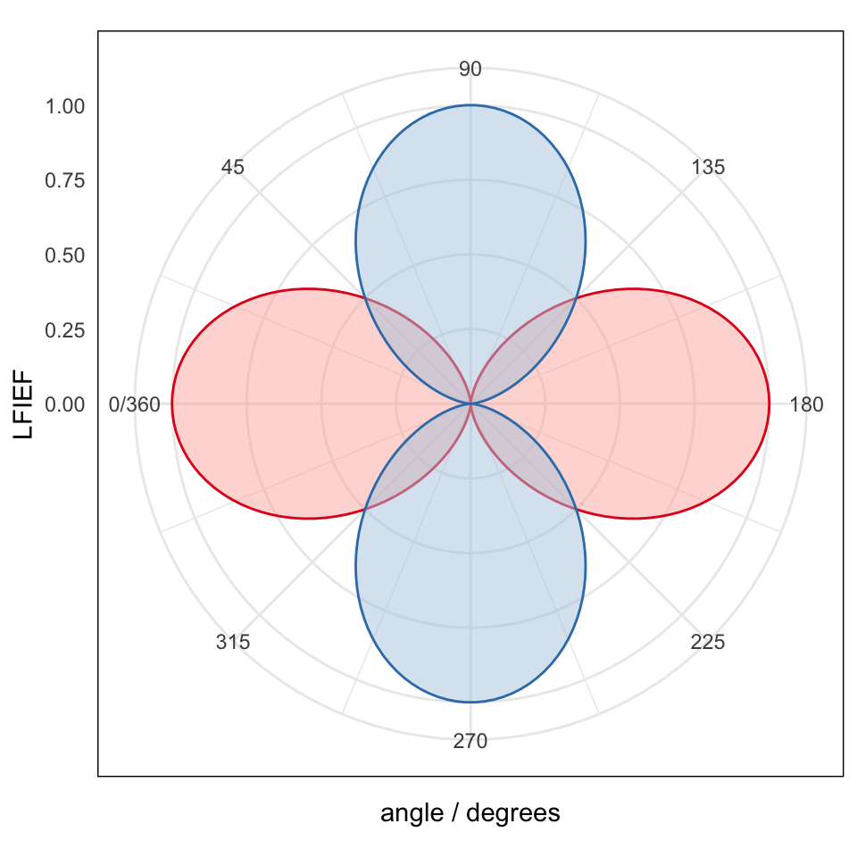
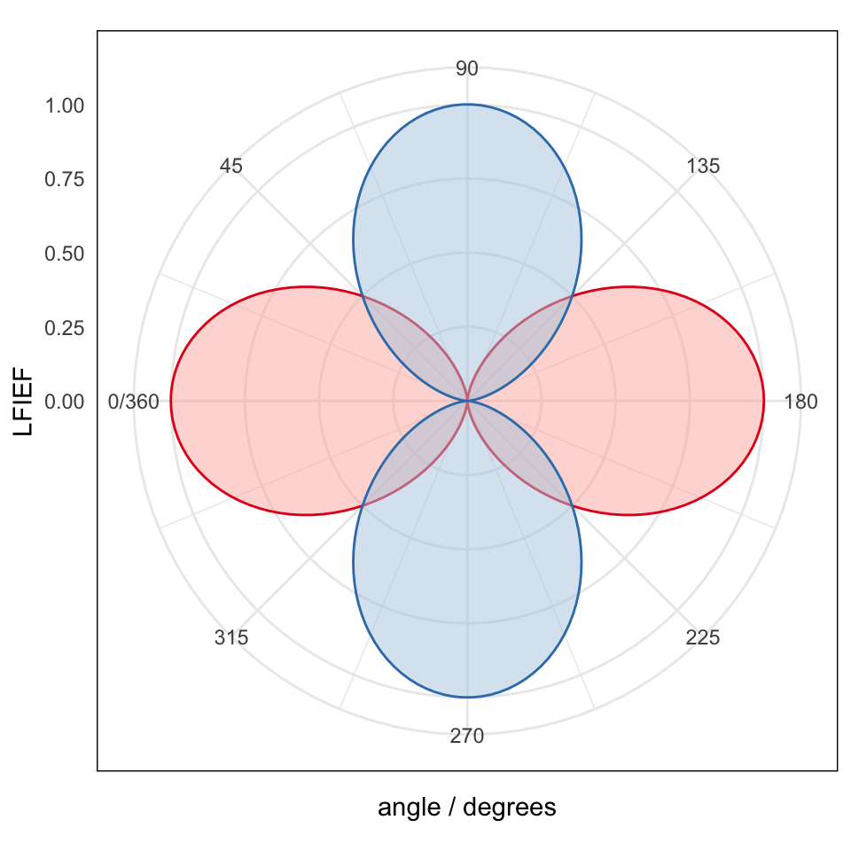
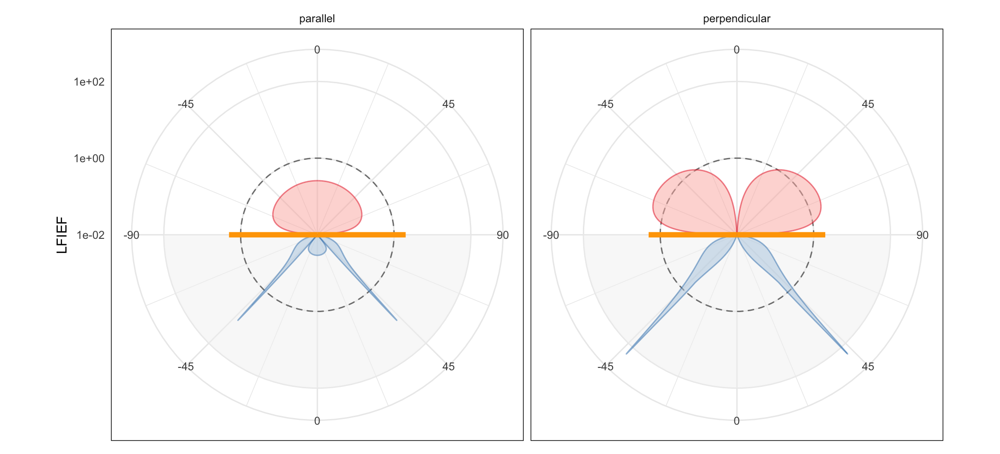

Dipole radiation patterns
baptiste Auguié
24 February, 2017
Applying optical reciprocity to the problem of dipolar emission near a planar interface, we can obtain the radiation pattern (intensity vs angle) by modelling the near-field at the dipole location for plane-wave illumination at a range of incident angles.
library(planar)
library(ggplot2)
require(reshape2)Dipole in a vacuum
We first confirm that the dipolar emission in a vacuum follows the expected sin^2 pattern. We define a dummy simulation (no actual interface),
## radiation pattern of a dipole in a vacuum
## parallel and perpendicular orientations, p- polarisation
## from left to right
## incidence air | air
stack <- list(wavelength=632.8,
angle = seq(0, pi, length=100),
epsilon = list(1.0^2, 1.0^2),
thickness = c(0, 0),
d = 1,
polarisation = 'p')
## simulation (side of incidence is irrelevant)
M <- do.call(multilayer, stack)
str(M)## List of 15
## $ wavelength : num 633
## $ k0 : num 0.00993
## $ angle : num [1:100] 0 0.0317 0.0635 0.0952 0.1269 ...
## $ q : num [1:100] 0 0.0317 0.0634 0.0951 0.1266 ...
## $ reflection : cplx [1:100] 0+0i 0+0i 0+0i ...
## $ transmission: cplx [1:100] 1+0i 1+0i 1+0i ...
## $ R : num [1:100] 0 0 0 0 0 0 0 0 0 0 ...
## $ T : num [1:100] 1 1 1 1 1 1 1 1 1 1 ...
## $ A : num [1:100] 0 0 0 0 0 0 0 0 0 0 ...
## $ dist :List of 2
## ..$ : num -1
## ..$ : num 1
## $ fields :List of 4
## ..$ Eix.E1 : cplx [1, 1:100, 1:2] 1+0i 0.999+0i 0.998+0i ...
## ..$ Epix.E1: cplx [1, 1:100, 1:2] 0+0i 0+0i 0+0i ...
## ..$ Eiz.E1 : cplx [1, 1:100, 1:2] 0+0i -0.0317+0i -0.0634+0i ...
## ..$ Epiz.E1: cplx [1, 1:100, 1:2] 0+0i 0+0i 0+0i ...
## $ Ml.perp :List of 1
## ..$ : num [1:100] 0 0.00101 0.00402 0.00904 0.01603 ...
## $ Ml.par :List of 1
## ..$ : num [1:100] 1 0.999 0.996 0.991 0.984 ...
## $ Mr.perp :List of 1
## ..$ : num [1:100] 0 0.00101 0.00402 0.00904 0.01603 ...
## $ Mr.par :List of 1
## ..$ : num [1:100] 1 0.999 0.996 0.991 0.984 ...# combine results of front vs back illumination simulations (identical here, but anyway...)
combined <- data.frame(angle = c(stack$angle, stack$angle + pi) * 180/pi,
parallel = c(M$Mr.par[[1]], M$Ml.par[[1]]),
perpendicular = c(M$Mr.perp[[1]], M$Ml.perp[[1]]),
side = gl(2, length(stack$angle),
labels=c("front", "back")))
## basic plot
qplot(angle, perpendicular, colour=side, data=combined, geom="line")
## polar plot with two variables
m <- melt(combined, id=c("angle", "side"))
ggplot(m, aes(angle, value)) +
geom_polygon(aes(fill=variable, colour=variable), alpha=0.5) +
scale_x_continuous(breaks = seq(0, 360, by = 45),
limits = c(0, 360), expand = c(0, 0)) +
coord_polar(start=-pi/2) +
scale_fill_brewer(palette = "Pastel1") +
scale_colour_brewer(palette = "Set1") +
labs(x = "angle / degrees", y = "LFIEF",
fill = "Orientation") +
guides(fill="none", colour="none") 

Dipole near a thin gold film (Kretschmann configuration)
In the Kretschmann configuration, molecules situated on the air side will radiate predominantly in a narrow cone of angles, associated with the excitation of surface plasmon-polaritons (SPPs) radiating into the glass substrate. By reciprocity, the field enhancement experienced by a dipole near the metal layer is also obtained for a narrow range of angles where conservation of in-plane momentum between the incident light and the SPPs is satisfied.
## from left to right
## incidence air | metal | glass
back <- list(wavelength=632.8,
angle = seq(-pi/2, pi/2, length=1e4)[-c(1, 1e4)],
epsilon = list(1.52^2, epsAg(632.8)$epsilon, 1.0^2),
thickness = c(0, 50, 0),
d = 1,
polarisation = 'p')
## incidence glass | metal | air
front <- invert_stack(back)
## simulation
M.front <- do.call(multilayer, front)
M.back <- do.call(multilayer, back)
# redefine angles to span 0 - 360 degrees
angle <- c(front$angle + pi/2, back$angle + 3*pi/2) * 180 / pi
## look at field in first and last media, respectively
last <- length(M.back$Mr.par)
intensity.par = c(M.front$Ml.par[[1]] , M.back$Mr.par[[last]])
intensity.perp = c(M.front$Ml.perp[[1]] , M.back$Mr.perp[[last]])
combined <- data.frame(angle=angle, parallel=intensity.par,
perpendicular=intensity.perp,
side = gl(2, length(back$angle),
labels=c("front", "back")))
## polar plot with two variables
m <- melt(combined, id=c("angle", "side"))
# custom labels for polar plot
mylabels <- c(-90,-45,0,45,90,45,0,-45)
ggplot(m, aes(angle, value)) +
facet_wrap(~variable, ncol=2) +
annotate("rect", xmin=180, xmax=360, ymin=1e-2, ymax=100,
fill="grey95", alpha=0.5) +
annotate("rect", xmin=0, xmax=360, ymin=1e-2, ymax=1,
fill=NA, colour="grey50", lty="dashed") +
geom_polygon(aes(fill=side), alpha=0.5, colour=NA) +
geom_line(aes(colour=side), alpha=0.5) +
scale_x_continuous(breaks = seq(0, 360-45, by = 45), labels=mylabels,
limits = c(0, 360), expand = c(0, 0)) +
scale_y_log10(lim=c(1e-2, 200)) +
coord_polar(start=3*pi/2) +
annotate("segment", x=360, xend=360, y=0, yend=2, colour="orange", size=2) +
annotate("segment", x=180, xend=180, y=0, yend=2, colour="orange", size=2) +
scale_fill_brewer(palette = "Pastel1") +
scale_colour_brewer(palette = "Set1") +
labs(x = NULL, y = "LFIEF", fill = "side",linetype="Orientation") +
guides(fill="none",colour="none")